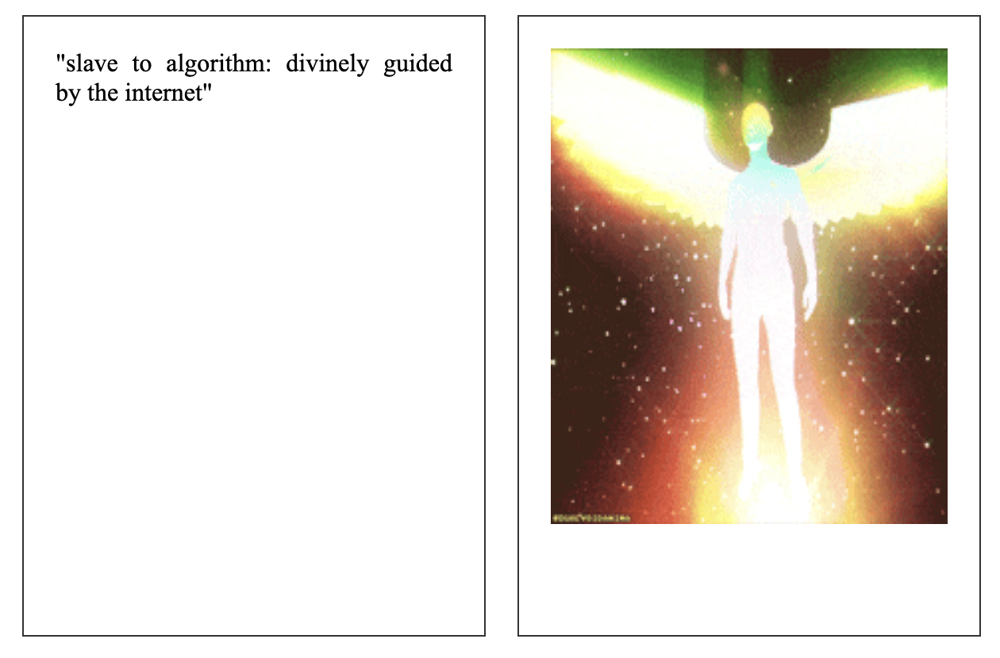

An exercise where we had to do 10 activities that are determined by chance. I did 12 because I misunderstood the assignment. I decided to entertain the idea of a 'digital divinity' and intepreted the outcomes of my digital decimal dice as angel numbers. The outcomes were surprisingly less random than I thought, as some numbers kept appearing while others never do. The most commonly rolled number, 888, is actually my birth angel number. Maybe the universe is real?
2) live coding
This week's live coding mainly covered the textToPoints function in p5.js which can result in some pretty cool sketches. However, loading fonts into p5.js is a little bit tricky due to how particular it is so I haven't been exploring textToPoints much outside of the class tutorial. We also went over createCapture(VIDEO) which I ended up using in my assignment 2 homepage.